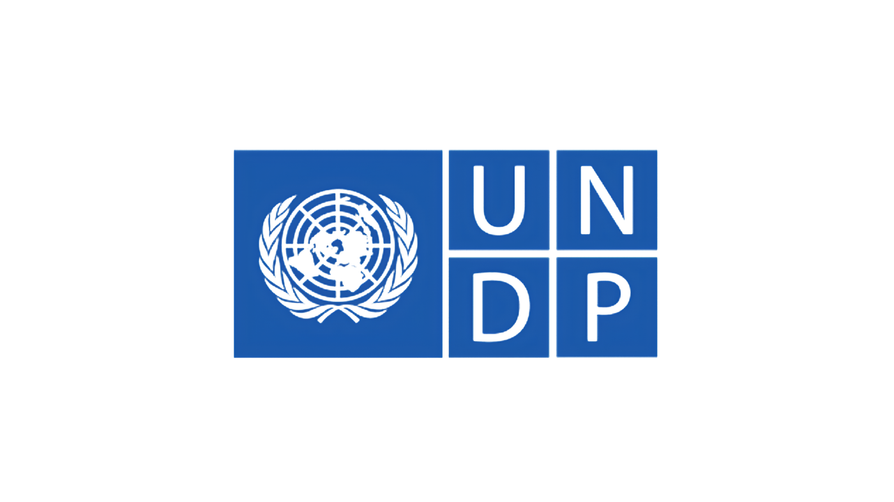
Developed interactive learning modules based on client-provided storyboards; created animations and built interactivity.
Adobe After Effects
Articulate Storyline
Project Showcase
Full case studies for every featured project — with live, embedded demos wherever the module allows it. Scroll through, or jump straight to one below.
Corporate Learning
Training & Development
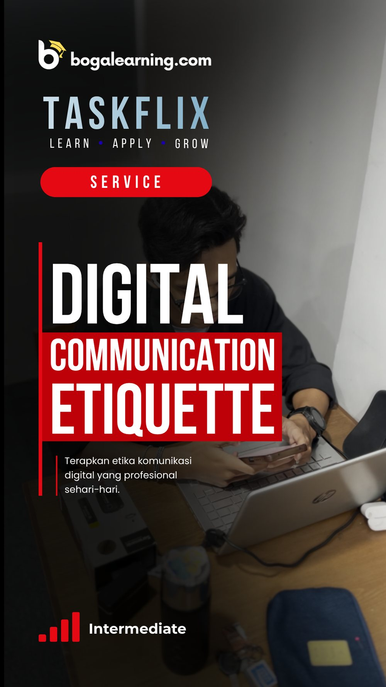
Technical Microlearning Video
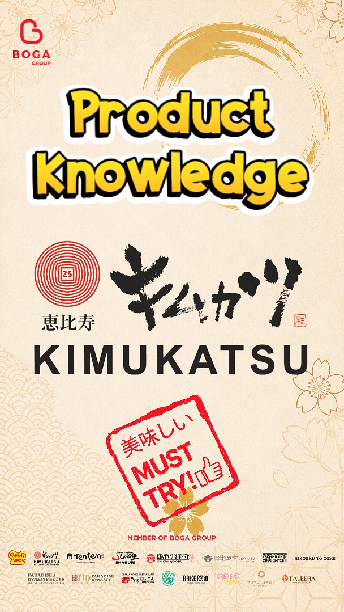
Product Knowledge Microlearning
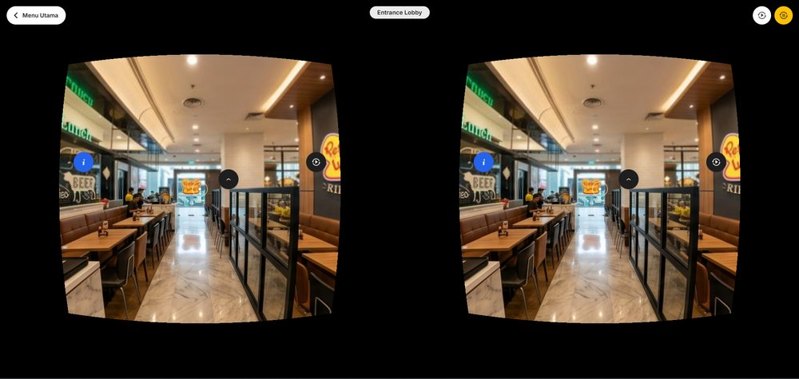
Immersive 360° VR Learning (On Development)
Developed short-form technical microlearning videos for Taskflix, providing concise and targeted learning content tailored to specific user needs.
Developed Product Knowledge microlearning videos for Taskflix, helping frontline employees quickly learn menu characteristics and make relevant recommendations to customers.
Ongoing project — designing an immersive 360° VR learning experience that allows outlet employees to virtually explore their work environment and gain contextual experience before engaging with training materials.
No public demo available for this project — training content is internal to Boga Group.
Corporate & Government E-Learning
Enterprise & Government Learning Module Development
Developed interactive e-learning modules for 8 enterprise and government clients at Lookmedia, working across animation, interactivity, module layout, and voice-over integration depending on each client's brief and workflow stage.

Developed interactive learning modules based on client-provided storyboards; created animations and built interactivity.
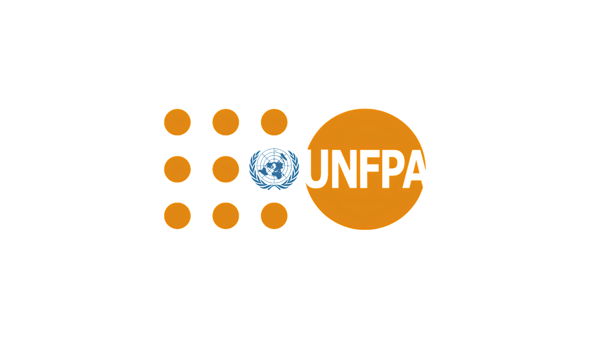
Developed and structured module layouts in Articulate Storyline as preparation for the animation stage.
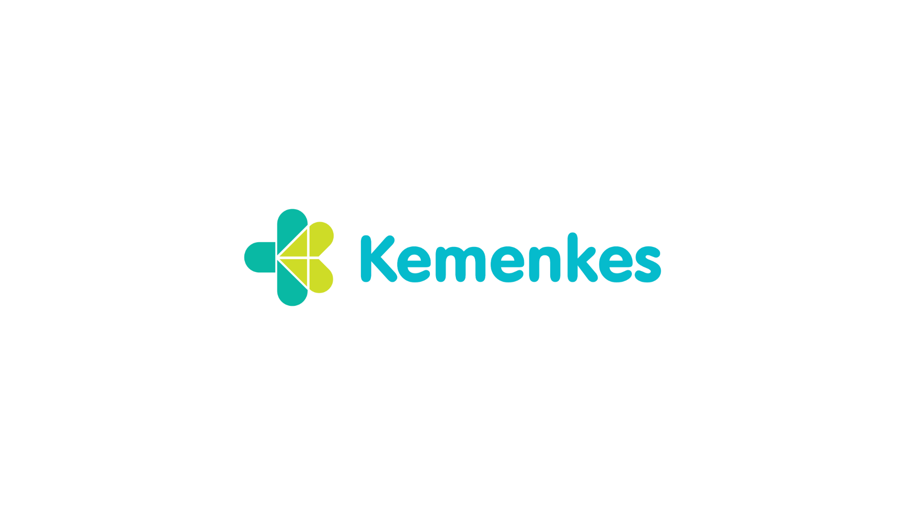
Developed module layouts, animation, voice-over integration, and interactive elements.
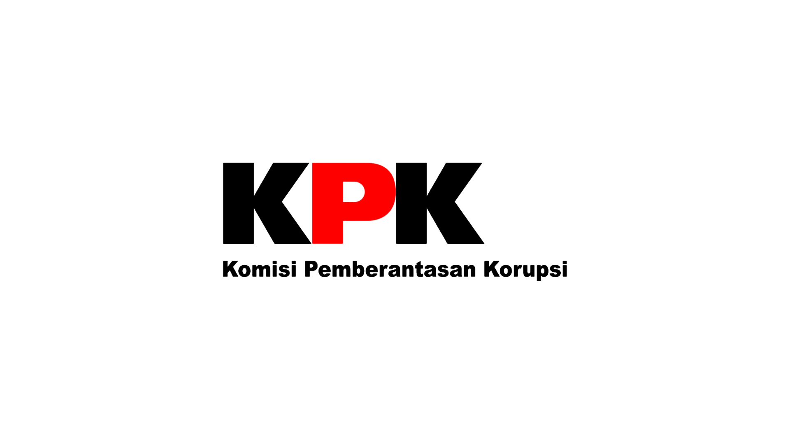
Developed animation, module layout, sound effects, and voice-over based on client storyboards; adapted existing character assets; developed interactive video activities.
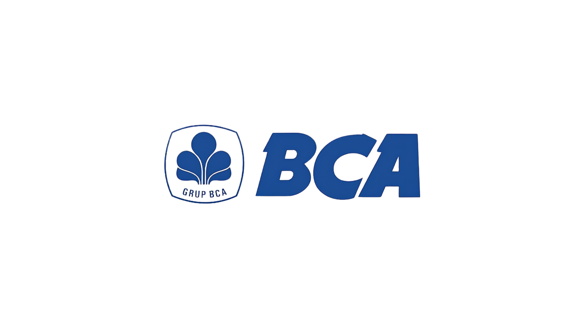
Developed module layouts and animations based on the provided learning design.
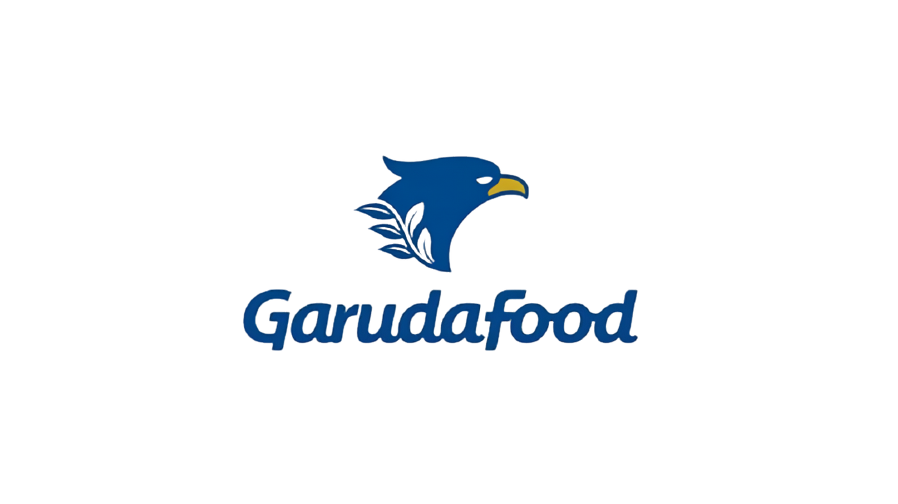
Developed module layouts and animations; also supported the video production team in developing animated video content.
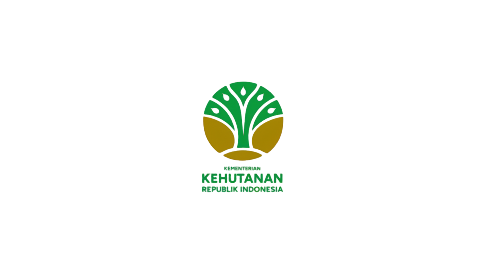
Developed module layouts and animations, recorded character voice-over, and adapted existing visual assets.
Developed a MOOC website using WordPress; collaborated with the team to integrate MasterStudy LMS with Articulate Storyline for SCORM reporting; created course thumbnails.
Learning Video Production
Video Editing & Post-Production
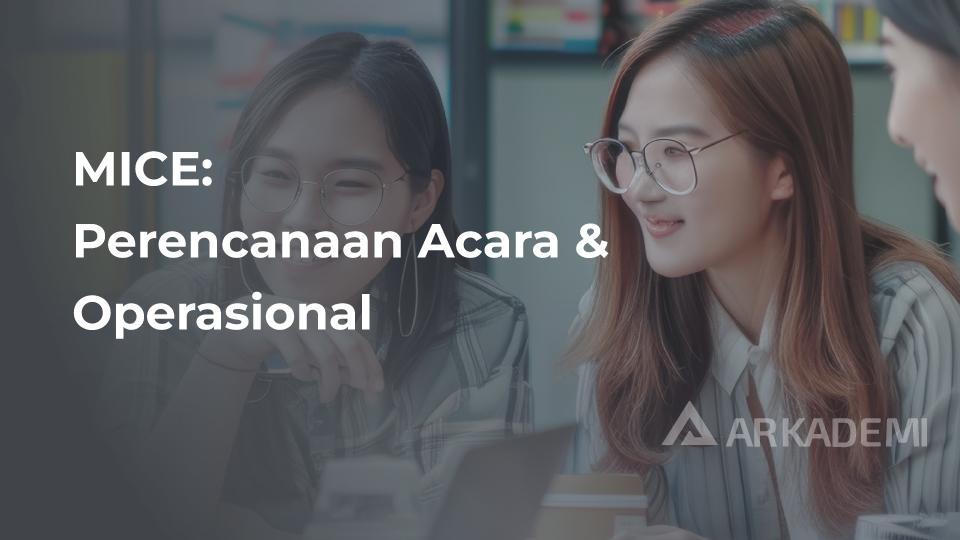
MICE: Perencanaan Acara & Operasional
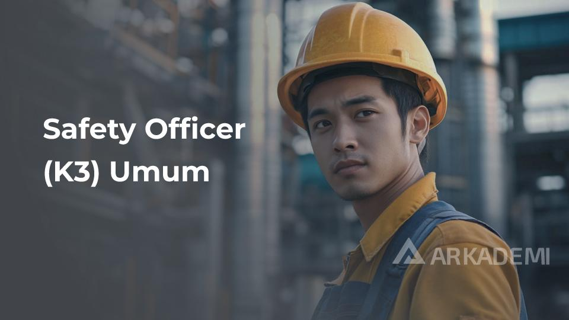
Safety Officer (K3) Umum
At Arkademi, I edited and optimized learning videos for online courses, ensuring clear and engaging visual presentation. I handled video rendering and uploaded final learning content to AWS for course delivery, while also supervising freelance video editors and reviewing their work to maintain quality and consistency. I collaborated with the learning and content team to transform educational materials into effective video-based learning content and supported the production workflow from post-production through final delivery.
Learning Video Production
Video Editing & Post-Production
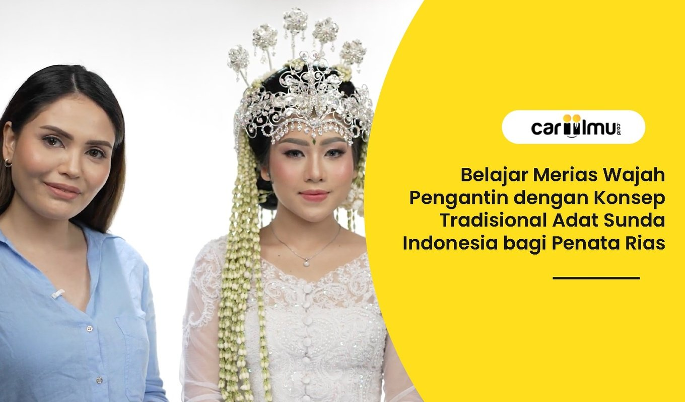
Belajar Merias Wajah Pengantin — Konsep Tradisional Adat Sunda
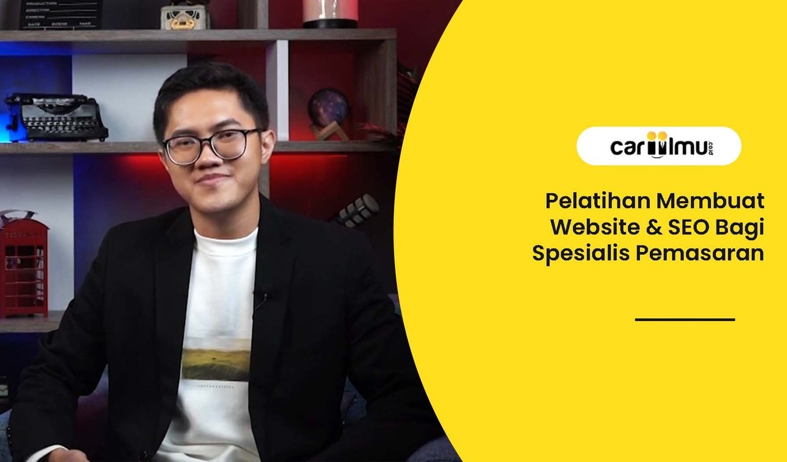
Pelatihan Membuat Website & SEO Bagi Spesialis Pemasaran
Produced and edited learning videos for digital education content, from analyzing raw production footage and structuring edits based on learning objectives to applying consistent visual and audio treatments. Prepared and rendered final videos in multiple formats for digital learning delivery.
Interactive Learning
Elementary & Junior High Learning Modules
A series of interactive digital learning modules developed for elementary and junior high school students as part of Kemendikdasmen's Interactive Flat Panel (IFP) program, combining multimedia content, interactive activities, and formative assessments using Lumi Education — designed for a 75-inch digital interactive display.
A series of interactive Science learning modules developed for Phase B elementary school students as part of the Kemendikdasmen Interactive Flat Panel (IFP) program. Developed using Lumi Education, the modules combine multimedia content, interactive activities, and formative assessments to create engaging learning experiences.
An interactive Science learning module introducing Phase B students to the diversity of Indonesia's landscapes. The module combines text-based materials, instructional videos, drag-and-drop activities, and multiple-choice quizzes to create an engaging and interactive learning experience.
An interactive learning game helping Phase B students explore the relationship between Indonesia's diverse landscapes and the professions of local communities. The module uses interactive exploration and learning activities to connect geographical environments with everyday community life.
A series of interactive Social Studies learning modules developed for Grade 7–9 Junior High School students as part of the Kemendikdasmen Interactive Flat Panel (IFP) program. Developed using Lumi Education's Course Presentation, the modules combine multimedia learning materials, interactive activities, and formative assessments to create engaging learning experiences.
An interactive Social Studies module exploring the potential of natural disasters, designed to help Grade 7 students understand the topic through multimedia learning materials and interactive activities.
An interactive Social Studies module introducing the concepts of export and import, designed to help Grade 8 students explore the topic through multimedia learning materials, interactive activities, and formative quizzes.
An interactive Social Studies module exploring Indonesia's potential to become a developed country, designed to help Grade 9 students engage with the topic through multimedia content, interactive activities, and formative assessments.
Technical Learning
Technical Systems Training Video
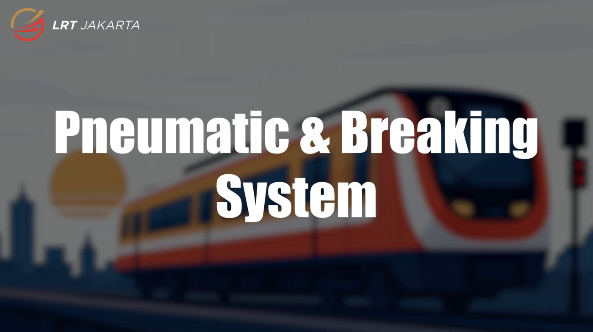
Pneumatic & Braking System
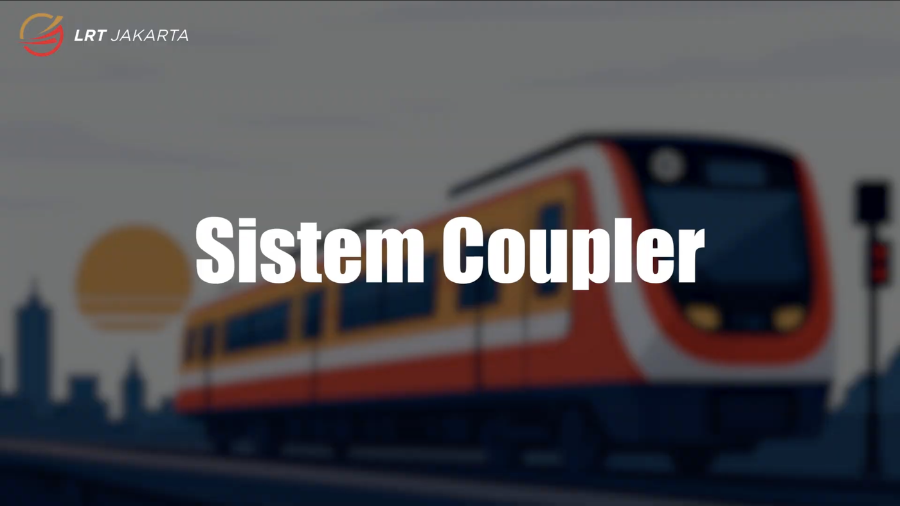
Coupler System
Developed two animated instructional videos for LRT Jakarta's internal LMS, covering Pneumatic & Braking System and Coupler System. The project involved translating technical learning content into structured visual narratives and animated learning materials designed to support employee training and technical knowledge development.
No public demo available for this project — training video is internal to LRT Jakarta.
Learning Object
Learning Object & Media Development
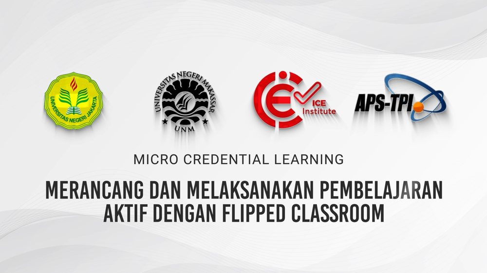
Flipped Classroom — Microcredential Learning
Developed Learning Object videos for ICE Institute, collaborating with subject matter experts to structure learning content and translate it into engaging video-based learning materials. Created storyboards, designed animated logo bumpers, and produced animated instructional videos such as "What is Flipped Classroom" and "Building Character" for stakeholder review and approval.
No public demo available for this project.
Academic Thesis Project
Educational Technology — Thesis & Coursework Projects
A collection of academic digital learning projects developed during my studies in Educational Technology at Universitas Negeri Jakarta, exploring gamified learning, interactive multimedia, Learning Object development, and LMS-based learning experiences. These projects demonstrate my experience in transforming instructional content into engaging digital learning experiences through visual design, multimedia, interaction, and learning technology.
Gamified Interactive Learning Module. An interactive Islamic learning module designed for Grade 2 elementary school students, focusing on Makharijul Huruf Hijaiyah and Tajwid. Developed as a gamified learning experience, the module combines illustrated learning materials, interactive activities, instructional content, image-based quizzes, and video to support students in identifying Hijaiyah letter articulation and applying basic Tajwid concepts.
Interactive History Learning Module. An interactive History learning module designed for Grade 11 students, covering the disintegration of Indonesia between 1948 and 1965. The module presents historical events and regional conflicts through structured visual content, interactive navigation, multimedia materials, quizzes, and hyperlinks to create an engaging digital learning experience.
Interactive English Learning Module. An interactive English learning module designed to support students in understanding the structure and process of writing an argumentative essay. The module organizes learning content into key stages of argumentative writing, including the introductory, body, and concluding paragraphs, supported by visual materials, instructional video, audio, interactive activities, and quizzes.
LMS & Learning Object Development. A Moodle-based digital learning environment developed for the Persepsi dan Desain Pesan course at Universitas Negeri Jakarta. The project organizes course content into structured Learning Guidance and 17 Learning Objects, integrating instructional materials, multimedia resources, H5P activities, and formative assessments across topics including perception, communication, learning and instruction, message design, visual literacy, and the role of visuals in learning.
This project is a full course page with 8 sections, 16 interactive H5P modules, and 6 graded quizzes, rebuilt as a standalone interactive page.
Open Full Course PageBrand Identity & Rebranding
Visual Rebranding Concept
Developed a visual rebranding concept for Lemari Thriftbest, translating the client's brand direction into a refreshed visual identity. The project involved client discussions, concept development, logo exploration, storyboard development for the rebranding video, and production of the final logo and promotional video using Adobe Illustrator, After Effects, and Premiere Pro.
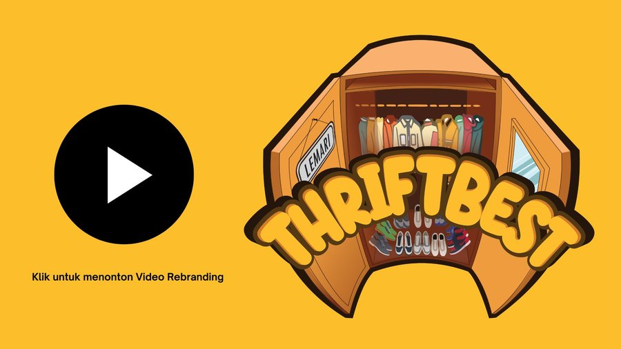
Creative Portfolio
Logo, poster, social media, presentation, and motion work — the visual skill set behind the learning projects above.
Let's talk about how these skills could work for your team.
Get in Touch